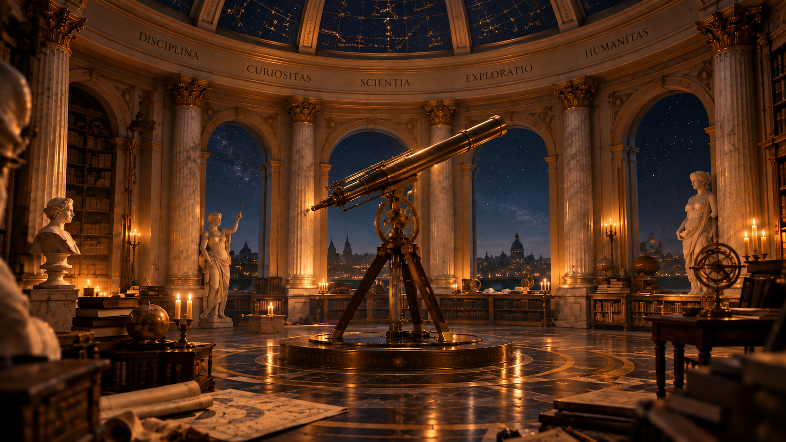
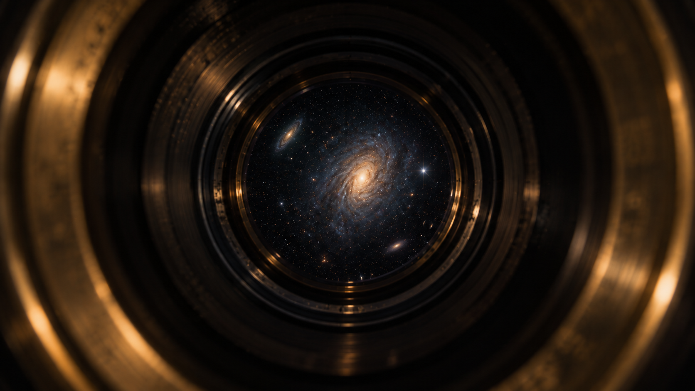
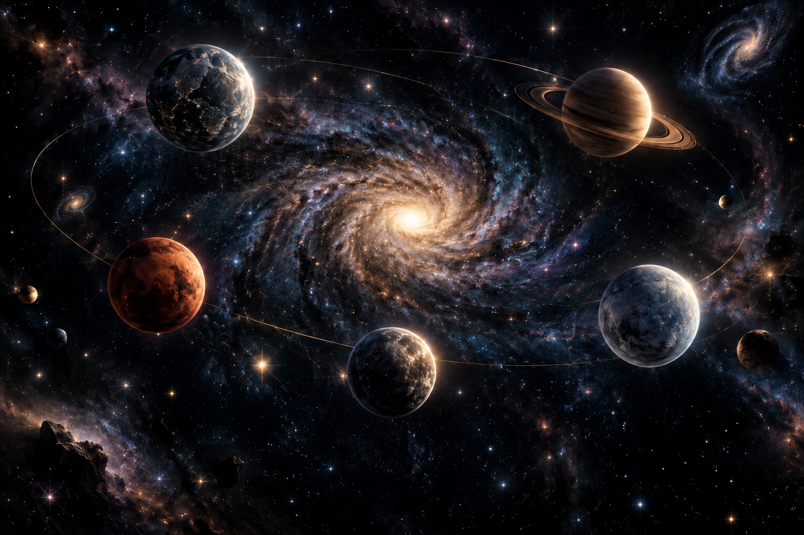

About me
Experience
Projects & Research
Cool Recs
In Touch
Explore
Same curiosity
A larger universe
← Back home
Irene
Vinuesa
Finance · Markets · Mathematics · Technology
Look through the telescope
Home
About me
Experience
Projects & Research
Cool Recs
In Touch